CNC Router - Part 2: Building hardware
Jan 6, 2020 21:28 · 326 words · 2 minute read
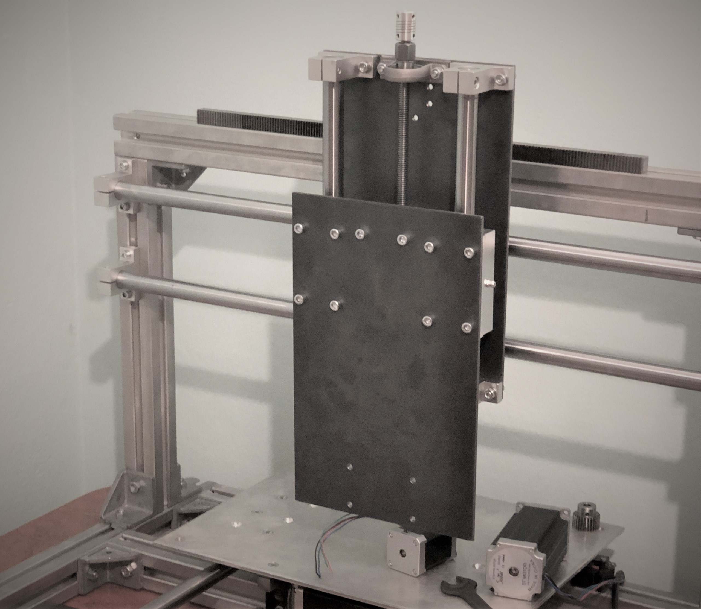
In previous entry I have described design and decisions behind CNC router. Here I will be describing recent progress, where the majority of hardware has been built.
Tracing, drilling, tapping
Biggest difference in new design as compared to 3D printer is X and Z carriage made from two 4mm thick steel plates. This makes for really simple, fast and what's most important straight assembly - but only under circumstance that all holes will be drilled precisely at locations. Even slight imprecision between holes within one plate will cause linear bearings on shafts to bind and things to go out of parallel in general - with no way of correcting that. I was well aware of that at the design state, but I made an assumptions that I will be able to mark off all holes precisely by using existing 3D printer for it's last task before it's disassemble.
Toolpaths were generated with Fusion 360 manufacturing module.
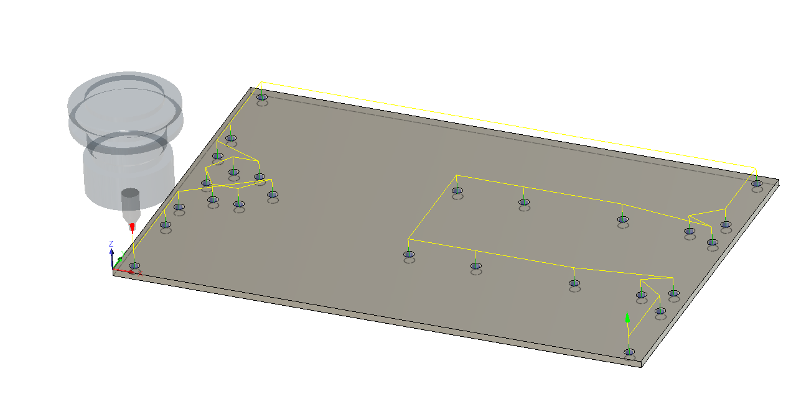 XZ backplate (back) 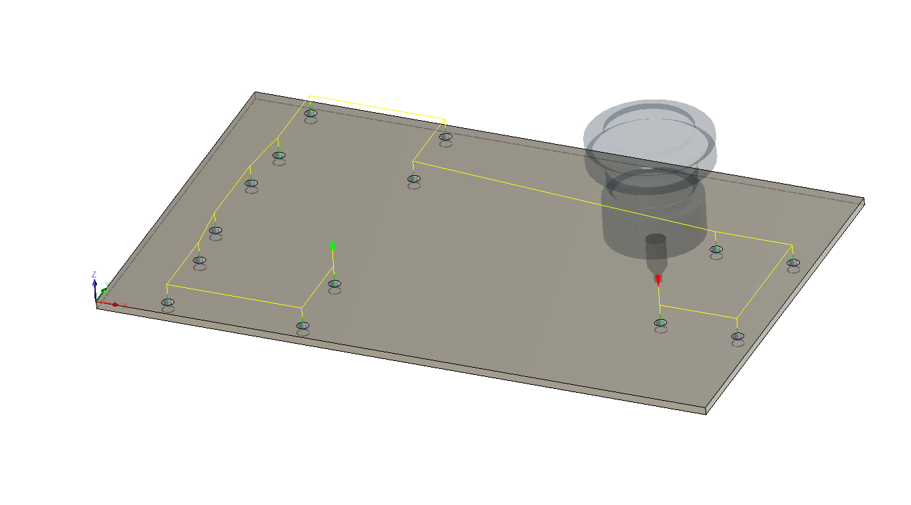 Tool backplate (front)
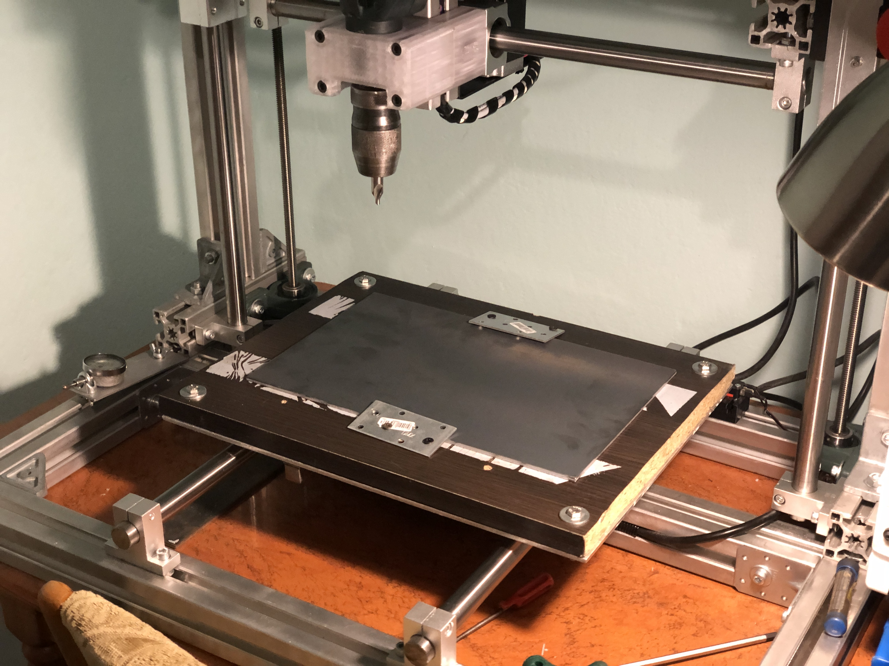 Attaching steel plate to expendable wooden table.
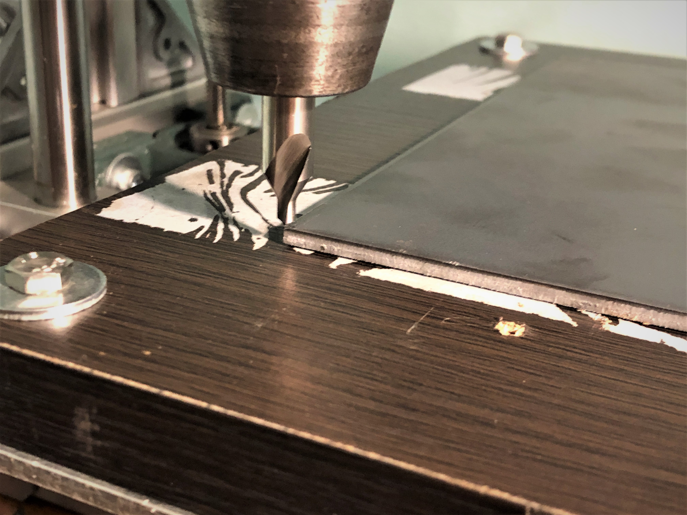 Resetting the tool
3D printer executing it's last GCODE before rebuild
Final result total of 40 precisely located point marks on two steel plates, ready to be drilled and tapped. Other than XZ plates, there are two mounts for X and Z stepper motors.
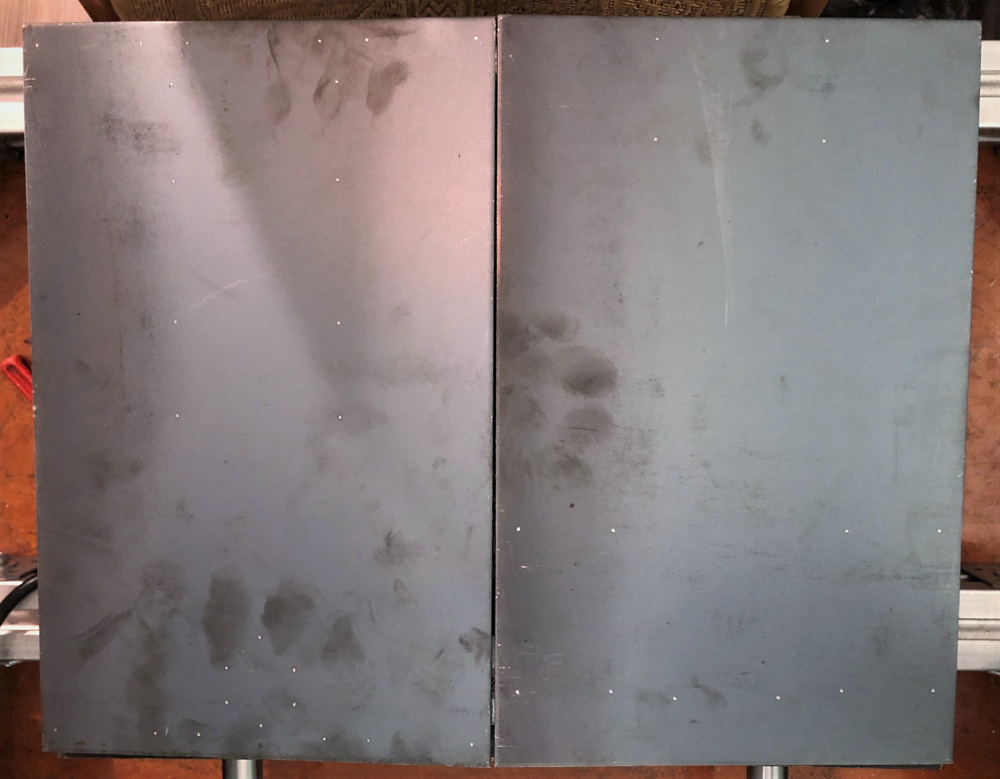 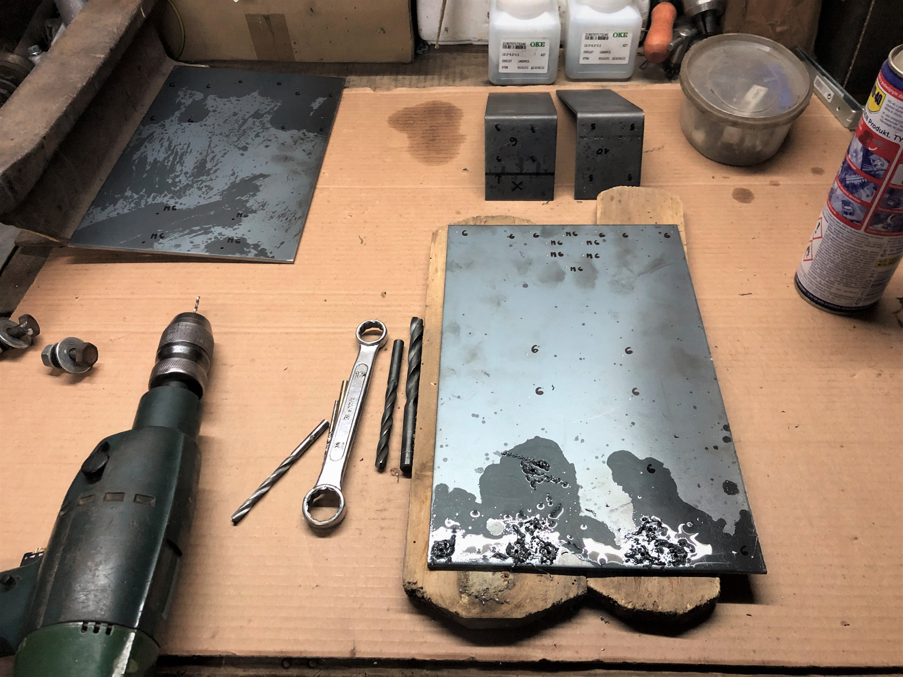
Hardware assembly
After ensuring that all omponents for which 3D printer was necessary were built, I began disassembling: 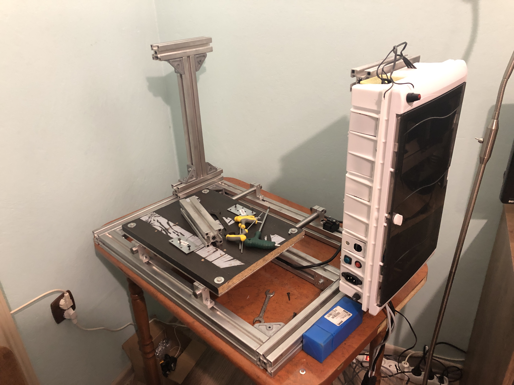
Immediately after that, construction of new frame was put together:

Having all that finished, I started build XZ subassembly, putting together steel plates, linear bearings, shafts (cut to length) and rest of parts, following Fusion 360 design.
 All new components drilled and tapped
All new components drilled and tapped
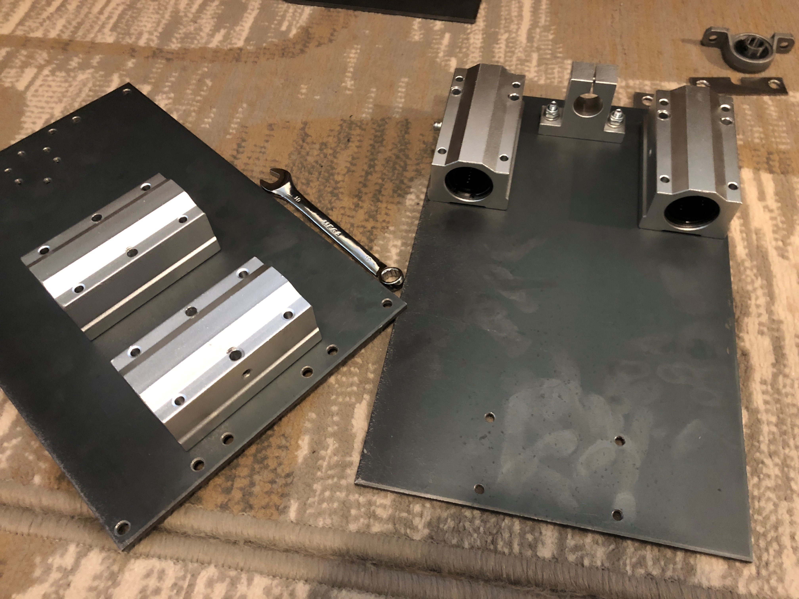 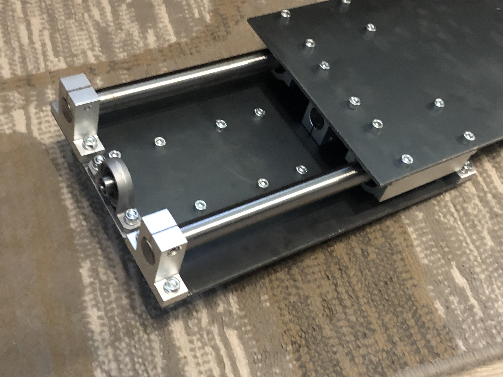
Completed XZ assembly turned out surprisingly nice. It all took literally 20 minutes of work to put this together - I am really not used to such kind of precision, using my now-gone, metal 3D printer for hole tracing was 10/10 idea. 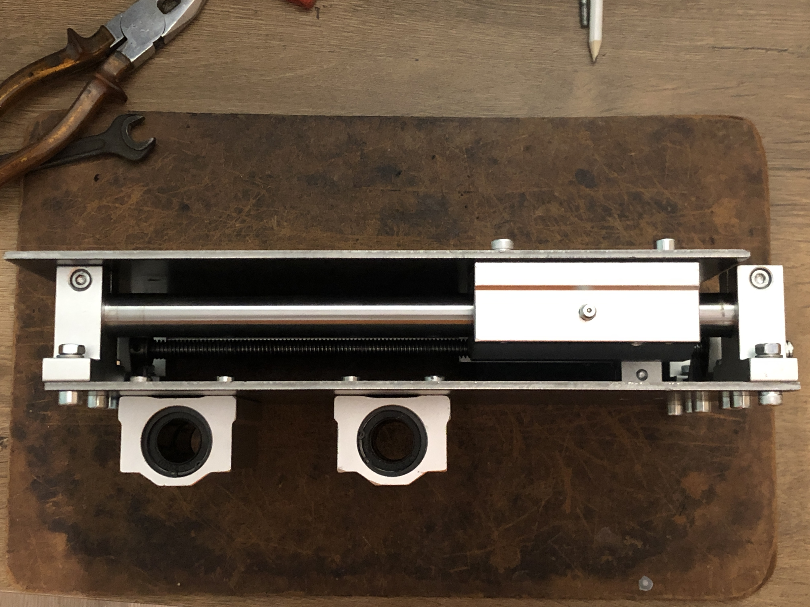
Last step was to mount X gantry on linear shafts 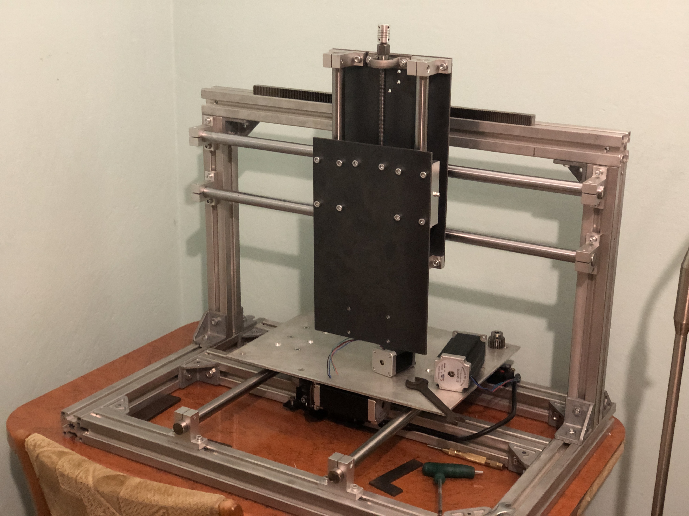